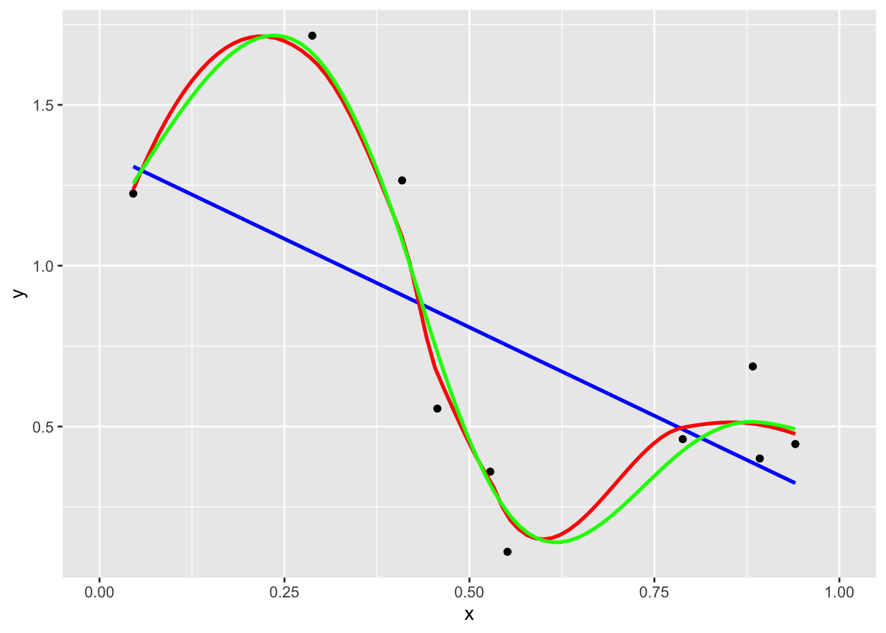

Chapter 8 Regularized Empirical Risk Minimization
8.1 ill Posed Problems
Let’s start with a simple example: in linear regression, we try to find \(\beta \in \mathcal R^d\) s.t \(\sum_{i=1}^n (y_i - <\beta, x_i>_{\mathcal R^d})^2\) is minimized. The solution \(\beta^* = (X^T X)^{-1} X^T Y\) only make sense when \((X^TX)^{-1}\) is invertible, or the optimization problem has a unique solution. The ill posed problems are the situation where there is no unique solution or \((X^TX)^{-1}\) is not invertible (\(d >> n\), not full rank, …).
Ridge regression aims at tackling this problem by adding a “regularizer” to the optimization problem: \(\underset{\beta}{\operatorname{min}} \lambda || \beta ||^2 + \sum_{i=1}^n (y_i - <x_i, \beta>)^2\) with \(\beta^* = (X^T X + \lambda I)^{-1} X^T Y\), where higher \(\lambda\) implies more “regular” and lower \(\lambda\) implies lesser “regular”. Naturally, one needs to choose \(\lambda \in (0, \infty)\) to balance between variance and bias.
In more generality, suppose we wanted to fit a function \(f\) that explains some observed data (\(f: [0,1] \to \mathcal R\)):

We are trying to solve \(\underset{f \in Z}{\operatorname{min}} \sum_{i=1}^n (f(x_i) - y_i)^2\). How many functions are close to the observations is the ill posed problem.
The idea in empirical risk minimization is to enforce “regularity” on the functions by adding a regularizer to the empirical risk object function: \(\underset{f \in Z}{\operatorname{min}} \sum_{i=1}^n (f(x_i) - y_i)^2 + \lambda R(f)\), where \(Z\) is some family of functions for which the objective function makes sense and \(R\) is some regularizer.
Remark. It is important to make sure that the objective function makes sense for elements \(f \in Z\). For example, \(Z\) can not be \(\mathcal L^2(\mathcal R)\), since for an arbitrary \(f \in \mathcal L^2(\mathcal R)\), we can not make sense of \(f(x_i)\).
In any case, after choosing \(Z\) and \(R\), we consider the solution to the regularized empirical risk minimization problem as a regression function for the data. Notice that this approach is a non-parametric approach (\(f \in Z\)).
Q: What types of regularizers we could work with?
A: Later we will consider \(Z = \mathcal H\) (RKHS) and \(R(f) = ||f||^2_\mathcal H\), but for now let us consider an unrelated setting:
Example 8.1 Let \(\mathcal X = [0,1]\) and the data \(0<x_1<\cdots<x_n<1\) with corresponding values \(y_1,\cdots,y_n \in \mathcal R\). Let \(Z\) be the set of functions \(f:[0,1] \to \mathcal R\) s.t \(f(x) = \int_0^x f'(t)dt\), \(\forall x \in (0,1)\) and s.t \(\int_0^1 (f'(x))^2 dx < \infty\). Define \(C_1([0,1])\) as Absolutely Continuous Functions defined on [0,1]. Then, \(C_1([0,1]) \subset Z\) i.e. \(f \in C_1([0,1]) \text{ and } f(0) = 0\Rightarrow f\in Z\).
Now let \(J(f):= \lambda \int_0^1 (f'(x))^2 dx (\text{ Regularization Term}) + \sum_{i=1}^n (f(x_i) - y_i)^2 (\text{Fidality Term})\). The goal is to:
- Minimize \(J\): \(\underset{f \in Z}{\operatorname{min}} J(f)\).
- Obtain a “first order” condition for optimality.
In search of inspiration, let’s go back to the Euclidean case: \(\underset{x \in \mathcal R^m}{\operatorname{min}} F(x)\).
First order condition: \(\nabla F(x^*) = \vec 0\), that is \(\frac{\partial F}{\partial x_i}(x^*) = 0\), \(\forall i=1,\cdots,m\).
Moreover, if \(x^*\) minimizes \(F\) over the whole \(\mathcal R^m\), it certainly minimizes \(F\) over the line \(\{x^* + tv: t\in \mathcal R\}\). Thus, fix \(v\) and define the function \(\phi_v(t):= F(x^* + tv)\). Then this function has a minimum at \(t=0\), which means that
\[ 0 = \phi'_v(0) = \frac{d}{dt} F(x^* + tv) |_{t=0} = <\nabla F(x^*), v> = \partial_v F(x^*) \]
The optimality condition in \(\mathcal R^m\) is equivalent to the optimality condition fro a collection of functions in \(\mathcal R\).
So, going back to Example 8.1, suppose \(f^*\) solves the problem (it is a minimizer). Pick an arbitrary \(g \in Z\) and consider the function: \(\phi_g(t):= J(f^* + tg)\), \(t \in \mathcal R\). Then \(\phi_g\) has a minimum at \(t=0\) (\(\phi'_g(0) = 0\)). Thus, we have:
\[ \begin{aligned} J(f^* + tg) &= \lambda \int_0^1 (f^{*\prime} + tg')^2 dx + \sum_{i=1}^n (f^*(x_i) + tg(x_i) - y_i)^2\\ &= \lambda \int_0^1 (f^{*\prime})^2 dx + 2 \lambda t \int_0^1 f^{*\prime} g' dx + \lambda t^2 \int_0^1 (g')^2 dx + \sum_{i=1}^n (f^*(x_i) + tg(x_i) - y_i)^2 \end{aligned} \]
Then, \(0 = \phi'_g(0) = 2 \lambda \int_0^1 f^{*\prime} g' dx + 2\sum_{i=1}^n (f^*(x_i) - y_i)g(x_i)\), which means that
\[ \lambda \int_0^1 f^{*\prime} g' dx = -\sum_{i=1}^n (f^*(x_i) - y_i)g(x_i) \]
This has to be true \(\forall g \in Z\). These equations are called Euler Lagrange Equations or First Order Optimality Conditions.
Above goes from \(f^*\) to First Order Optimality Conditions. Now consider the opposite situation:
Take \(g=g_1\) where \(g_1(x):= \operatorname{min} \{x,x_1\}\). It follows that \(\lambda \int_0^{x_1} f^{*\prime} dx = -\sum_{i=1}^n (f^*(x_i) - y_i)(x_i \wedge x_1)\). As \(\int_0^{x_1} f^{*\prime} dx = f^*(x_1) - f^*(0) = f^*(x_1)\), we have:
\[ \lambda f^*(x_1) = -\sum_{i=1}^n (f^*(x_i) - y_i)(x_i \wedge x_1) \]
Doing the same for \(j = 2, \cdots, n\), we obtain the system of equations:
\[ \lambda f^*(x_j) = -\sum_{i=1}^n (f^*(x_i) - y_i)(x_i \wedge x_j), ~j = 1, \cdots, n \]
We can solve this system to get the values of \(f^*\) at the points \(x_1, \cdots, x_n\). For the rest of \(f^*\), use linear interpolation for each interval and use a constant after \(x_n\):
To see \(f^*\) is linear in \([0,x_1]\), it is enough to show \((f^*)'' = 0\) in the interval:
Take \(g: [0,1] \to \mathcal R\) s.t \(g(x)=0\), \(\forall x \geq x_1\) and \(g(0) = 0\), \(g \in Z\). Then, we must have \(\int_0^{x_1} (f^*)' g' dx = 0\).
As \(\int_0^{x_1}(f^*)' g' dx = -\int_0^{x_1}(f^*)'' g dx + (f^*)' g |_0^{x_1} = -\int_0^{x_1}(f^*)'' g dx\), \(\forall g\). Thus, we have \((f^*)'' \equiv 0\).To see \(f^*\) is constant in \([x_n, 1]\):
\[ \begin{aligned} J(f)&= \lambda \int_0^1 (f'(x))^2 dx + \sum_{i=1}^n (f(x_i) - y_i)^2\\ &= \lambda \int_0^{x_n} (f'(x))^2 dx + \lambda \int_{x_n}^1 (f'(x))^2 dx + \sum_{i=1}^n (f(x_i) - y_i)^2 \end{aligned} \]
As \(J(f)\) has a minimum when \(f'(x) = 0\) at \([x_n, 1]\) and \(f^*\) minimizes \(J(f)\), we have \(f^*\) is constant in \([x_n, 1]\).